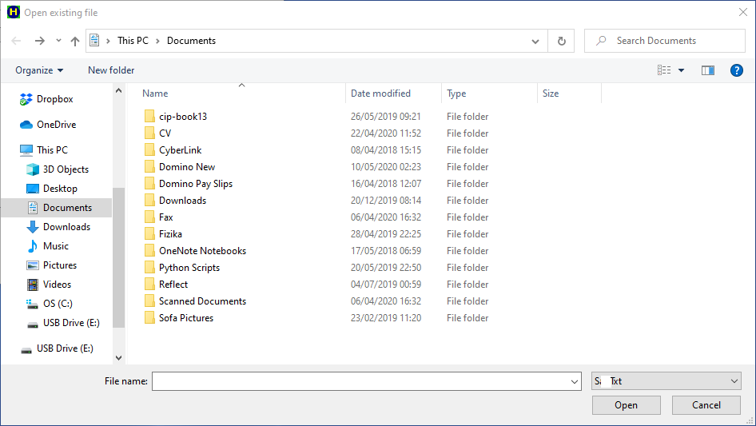
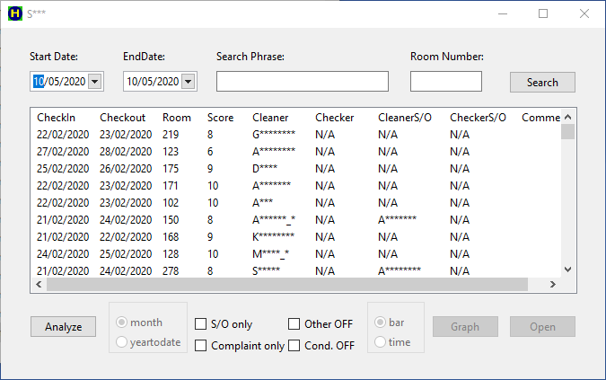
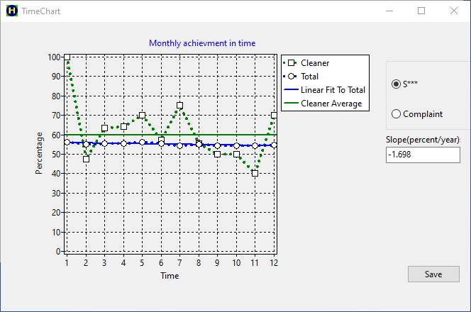

General Purpose
In hotels the housekeeping department can use the productivity project to organize the workload. This is a GUI application, which saves the daily roomcelaning tasks every day in a small file. The file contains who cleaned which rooms and how. Stay over rooms don't get linen change unless it's specified like that. Depart rooms get full service, including linen change. Those guests, who provide they email address, participate in a survey called S***. The guests give a score between 1 and 10, which describes the room cleinlines during their stay. The guest feedback data can be easily downloaded from the S*** web application, and can be saved to text document format. This project gets the guest feedback data every month as input and filters this data between the cleaners, using the saved daily task details as input too. The output is the guest feedback data for each individual cleaner, which can be used for quality control purposes. The output can be visualized on charts.
Using the search bar
The program can be used to do some basic searches about the rooms. We can set the start and end date for the search. If we set up the roomnumber and press the Search button, we get the list, which shows who cleaned the room and which type of service has been given. This can be seen on the figure. The meaning of the Status column is the following:
- D - depart cleaning
- S - stay over cleaning
- L - linen change saty over cleaning
We can search not only for room number, but for text comment as well. We can add text comments to the rooms during the daily operation. We can give the comment 'Foam Bedding' to those rooms, where we change the bedding to foam from the standard feather one. If we write the 'Foam' word to the Search Phrase input field and we leave empty the Room Number, we get a list for rooms, which contain the 'Foam' word in their text comment. It can be 'Foam Bedding', 'Foam Pillow', etc.
The Open Button
Pressing the open button, the open file dialog apears:
We can choose and open the text file, which contains the guest feedback data. The following figure show the result:
As you can see on the above figure, when we open the text file with the guest comments, the program looks for the claners, who serviced the rooms, automatically. This search happens only the first time, and the result gets saved in a modified file. For long stay rooms more cleaner could have serviced the room as stay over. The program gives the name of the person, who last serviced the room, as the last impression is the most important. We can add additional information to each line manually for further analysis. We just need to select the line and keep on pressing the SPACE key. It will toggle the 'C', 'O' and ' ' characters in the comment column. The meaning of these abbreviations are the following:
- 'C' - Condition Problem
- 'O' - Other Problem, which is not directly connected to the housekeeping department
- '' - No comment
The Analyze Button
The real analysis happens when we press the Analyze button. Before we do it, we can set up the specific way, how we want to proceed or take into account the additioanal information, we had input manually. We can select the following options with checking the relevant checkbox.
- S/O Only - The analysis only takes into account the stay over rooms
- Other OFF - We do not count stays, where other, not housekeeping related issues were mentioned by the guest
- Condition OFF - We do not count stays, where the guest mentioned condition problems
- Complaint only - We remove from the analysis only those stays, which get bad score (7 or below)
- Name - the cleaner's or supervisor's name
- S***% - the prcentage ratio of the number of 9 and 10 scores to the total number of scores
- Total - the total number of scores
- Complaint% - the percentage ratio of the bad scores (0 to 7) to the total number of scores
- Avg - the average of the scores
- StdDev - the standard deviation of the scores
- from 1 to 10 - the number of the specific scores
The Graph Button
We can easily visualize the results and compare it to the hotel average. We only need to select the cleaner's name and press the graph button. With the radio group at the left hand side of the graph button, we can select the bar chart view or the time chart view. The bar chart view looks like:
The time chart view shows the changes in time month by month until the year to date point:
The color coding of the graphs is uniform. The blue color describes the hotel average data. The cleaner's data is green, if the discribed parameter better than the hotel average. If the parameter is worse than hotel average, the graph of the cleaner's data is red.
Findings and interpretation
First of all we must mention, that although the statistical data objective, any interpretation has to be taken as a subjective explanation, which not necessarily true, hoever logical it seems to be. The output graphs obviously show, that the monthly data of the individual cleaners cannot be used for quality control purposes, because of the significant level of statistical fluctuations. The year to date data for the individuals seems to be accurate and useable for quality control. The accuracy of this could be around a couple of percent, just like the monthly data of the total hotel.
The building is getting old and tired and getting closer to the desperate need of a full refurbishment. All the data seems underlining this fact. We can see this from the individual guest comments. The bar charts show it as well. The phenomenon causes, that the number of 9 and even 10 scores get dropped down and the number of 7 and 8 scores are increasing by time. This results that the S*** score is continously slightly decreasing by time. This is about 1.7% per year. The trend is surprisingly well linear. This finding is quite accurate, because we know, that the S*** score was about 10% higher 5-6 years ago. The management is well aware of this fact. Only the best workers are capable of balancing out this degradation by hard work.
There is a slight correlation of the condition problems and the housekeeping cleanlines S*** score. Those people, who mention the condition issues, give slightly lower score, than those, who don't mention them. The possible explanation is that everybody sees the condition problems, these are fairly obvious. The S*** score is depressed anyway. There is a surprisingly stronger correlation between the other issues and the housekeeping S*** score. It means that those people, whose stay was free of other issues, give higher score for the cleanlines. Possible explanation is that most of the issues don't come from the housekeeping. Those people, who did not have any issue, are more satisfied with their stay, therefore they give higher cleanlines score. Any problem, especially an unresolved one, makes easily angry the guest. These people get angry with the hotel generally, therefore we can't expect good clinelines score from them.